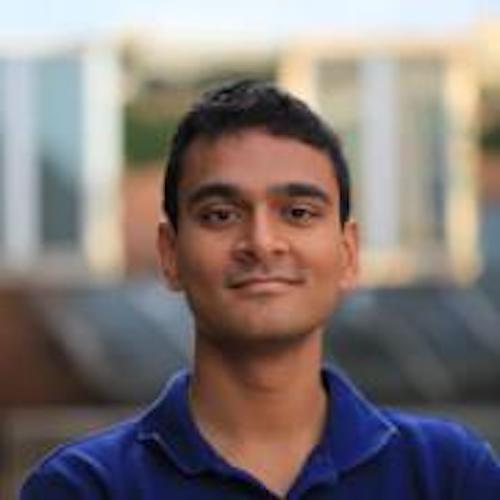
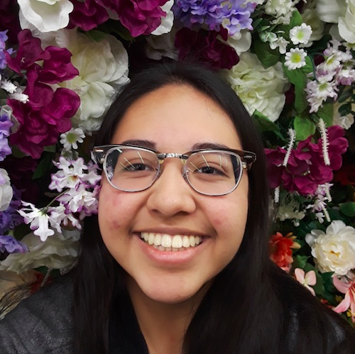
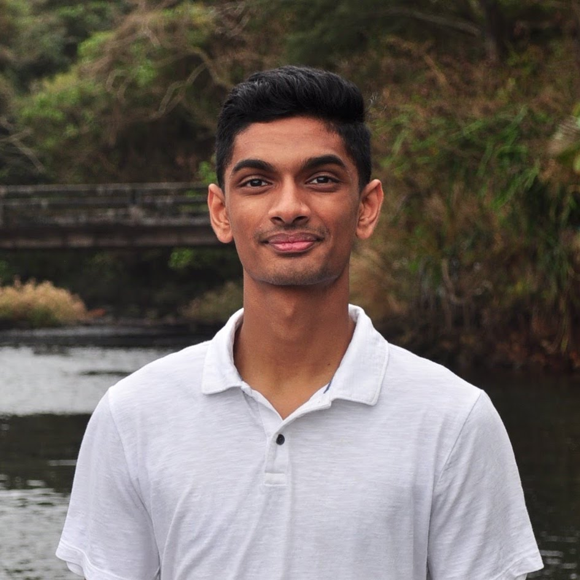
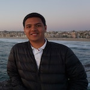
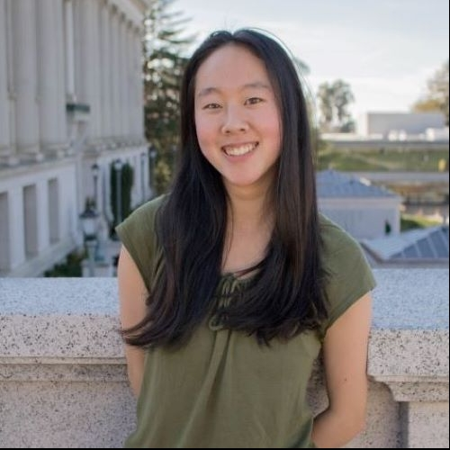
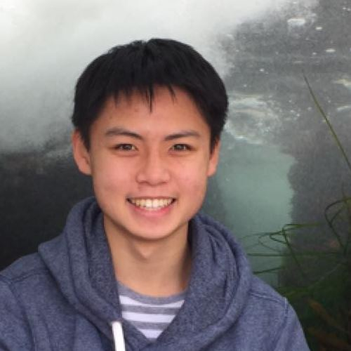
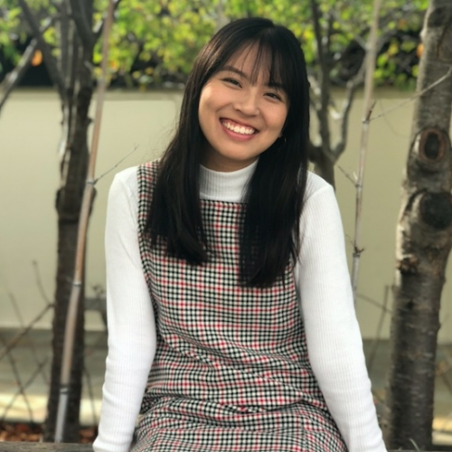
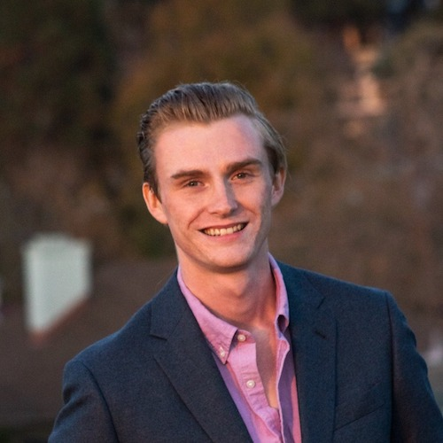

Staff
Instructors¶
|

ramesh_s@berkeley.edu
OH: Mon 6pm - 7pm in Soda 329, Wed 9:30am-10:30am in Soda 329
|
 swupnil@berkeley.edu
OH: Sun 5pm - 6pm in Cafe Strada, Mon 9:30am-10:30am in Evans 355
|
Teaching Assistants (uGSIs)¶
 Adele Bloch (bio) I am a senior at UC Berkeley double majoring in Data Science and Business. I have been on staff for 5 semesters now, and I am so excited for Data 8 this year. In my free time, you can find me running, hiking, singing, and finding new places to eat around Berkeley!
adele.bloch@berkeley.edu
Lab: Wed 6 pm - 8 pm in Evans 458
|
 Aidan De Angelis (bio) I'm a 4th year Computer Science major from Davis, CA. I took Data 8 my Fall semester freshman year and I absolutely fell in love with it. In my free time I like to hike, play paintball, and scope deals on Craigslist. I hope you learn to love Data 8 just as much as I do and I'm stoked to meet you all!
aidandeangelis@berkeley.edu
Lab: Wed 12 pm - 2 pm in Evans 458
|
 Alan Liang (bio) Hi! I'm a 4th year CS and Economics major sort of from Shanghai, China. Some things I enjoy include discovering good food, shibes, consumerism, and data science; guess which one is my favorite ;). Data 8 has been one of my favorite classes at Berkeley and I'm excited to be part of the course staff this semester. Looking forward to a great semester and meeting you all!
alanliang@berkeley.edu
Lab: Wed 6 pm - 8 pm in SDH 254
|
 Ananya Krishnan (bio) Hey! I am a junior studying cognitive and data science from sunny San Diego. I am interested in learning about cognitive processes and decision making with modeling and data. In my free time, I enjoy watching TED Talks, going on hikes, attempting to bake, and eating lots of ice cream. I am excited to be part of the Data 8 staff this year and hope to meet you this Fall!
ananya.krishnan@berkeley.edu
Lab: Thur 10 am - 12 pm in Evans B6
|
|
Andrew Chen (bio) Hi everyone! I'm a senior majoring in Statistics. I grew up in Hong Kong, so my interests include dim sum, computational biology, and funk music. Please say hi if you see me around, I love meeting new people!
andrewdchen@berkeley.edu
Lab: Fri 8 am - 10 am in SDH 254
|
Angela Guan (bio) My name is Angela Guan, and I'm a Junior studying Data Science and Economics. I'm from San Jose, California. I loved Data 8 in my first semester at Cal, and I have been part of Data 8 since. I am on the Cal table tennis team, and I have traveled to every continent (except Antarctica). Some of my hobbies are baking, hiking, traveling, and learning new languages. Excited to meet you!
guanangela@berkeley.edu
Lab: Wed 6 pm - 8 pm in Evans B6
|
 Anna Burns (bio) I am a senior majoring in Data Science with an emphasis in Industrial and Business Analytics. I have been a part of Data 8 for the past five semesters and it is still one of my favorite classes. I'm from a small town in the NorCal foothills and love being out in nature. I also like cooking and baking and of course Data 8!
anna.burns@berkeley.edu
Lab: Wed 12 pm - 2 pm in Evans B6
|
 Anna Nguyen (bio) Hello! My name is Anna and I'm a fourth-year Public Health and Data Science major with a concentration in Epidemiology and Biostatistics. To avoid work, I like making poorly curated Spotify playlists, planning out vacations I can't afford, and scrolling through Dogspotting on Facebook. Data 8 has been my favorite class here at Cal, and I hope you enjoy it as much as I did.
anna-nguyen@berkeley.edu
Lab: Thur 4 pm - 6 pm in Cory 105
|
 Annie Nguyen (bio) One summer, I lived on a farm in Hawaii and made friends with flat earthers. Yup!
vienannguyen@berkeley.edu
Lab: Wed 2 pm - 4 pm in Evans B6
|

Ashley Quiterio (bio) Hey everyone! I'm a junior majoring in Data Science, and I hope to use what I learn to make a social impact. I'd love to talk about how to use DS in different contexts. I look forward to getting to know y'all!
ashleyquiterio@berkeley.edu
Lab: Thur 2 pm - 4 pm in SDH 254
|
Avery Yip (bio) I too like to stalk my GSI's profile. Feel free to shoot me an email or come talk to me if you have any data 8 questions :)
averyyip@berkeley.edu
Lab: Thur 12 pm - 2 pm in Evans B6
|
Caroline Chen (bio) Hello! I am a junior studying Statistics and Data Science. My bloodstream is 70% boba, 20% coffee, and 10% sleep deprivation. Can't wait to meet all of you!
carolinejchen@berkeley.edu
Lab: Thur 6 pm - 8 pm in Evans B6
|
 Colby Lewis V (bio) This semester I'm trying to convince myself that managing stress is FUN. When I'm not taking or working for class I like to cook, listen to podcasts, and have friends over for board game nights. Sometimes the podcasts spill over into class time.
colbylewis2020@berkeley.edu
Lab: Thur 10 am - 12 pm in SDH 254
|
 Emily Zou (bio) Hi everyone! I am a third year CS major from the DC area. In my free time, I enjoy skating with the Cal Figure Skating Team, figuring out new ways to make coffee, and browsing Instagram for penguin pictures. I'm excited to be on staff again and I look forward to meeting you all!
emilykzou@berkeley.edu
Lab: Thur 10 am - 12 pm in Evans 458
|
Gregory Du (bio) Hello, my name is Gregory. I'm a junior Computer Science major and I'm a really big fan of Pixar movies and 3D Graphics, cooking, looking at ~aesthetic~ PC builds, and that feeling you get when you're really thirsty and you drink a cool, crisp glass of water (flat not sparkling).
gregoryd2017@berkeley.edu
Lab: Wed 4 pm - 6 pm in SDH 254
|
Gregory King (bio) Hey everyone! I'm a third year Economics major from the LA area. Outside of this class, I love watching stand up comedy, listening to podcasts, or binging HBO shows!
gregking22@berkeley.edu
Lab: Thur 2 pm - 4 pm in Cory 105
|
|

Hari Subbaraj (bio) I'm a first year grad student studying Computer Science! I really like Data8, comics, basketball, and books, and I'm happy to be a part of course staff again!
hsubbaraj@berkeley.edu
Lab: Wed 12 pm - 2 pm in SDH 254
|
Hubert Luo (bio) Hi! I'm a fourth year from Toronto studying statistics and applied math, with a concentration in data science. I'm interested in applied statistics in connection with finance and political science. On campus, I'm part of Berkeley Model United Nations, an educational non-profit which organizes the oldest Model UN conference in the world and the largest on the west coast with 2,000+ delegates.
hubertluo@berkeley.edu
Lab: Fri 9 am - 11 am in Evans B6
|
Ian Castro (bio) Hello! I am a third-year studying Media Studies & Microbial Biology from the East Bay with an interest in education, biotechnology, and film. I've been involved with Data 8 since my first semester at Cal and I'm looking forward to another great semester. Let me know if you have any music, food, or movie recommendations!
castro.ian@berkeley.edu
Lab: Wed 6 pm - 8 pm in Cory 105
|
Irene Wang (bio) I am a third year statistics and economics major from San Diego. I enjoy watching movies, hanging out with friends, and sketching. I can't wait to teach data 8 to you this fall!
irenerwang@berkeley.edu
Lab: Thur 8 am - 10 am in Cory 105
|
|
Jade Yen (bio) Hi there! I'm a senior studying Computer Science and Cognitive Science and have been a part of Data 8 since my very first semester (and could all fit comfortably in Pimentel :') !). Outside of classes I enjoy making extremely specific Spotify playlists, binge-watching Bon Appetit videos, wearing as much fruit-print clothing possible, and trying every snack Trader Joe's has to offer.
jadeyen@berkeley.edu
Lab: Thur 12 pm - 2 pm in Cory 105
|
 Jifu Li (bio) Hey y'all! I'm a third year MCB and Nutrisci major from Jacksonville, Florida (Go Jags!). I like playing and watching sports, and since this is fall semester you will probably find me constantly checking my fantasy football app. Feel free to reach out to me about how my team is doing.
jifu.li@berkeley.edu
Lab: Thur 8 am - 10 am in Evans 458
|
Juliann Nguyen (bio) Hi! I'm a senior studying Statistics. When I have some free time, I enjoy tv show binging and seeing dogs in real life, photos, or videos. I'm super excited to be on staff this semester and am looking forward to working with you all!
juliannnguyen@berkeley.edu
Lab: Thur 6 pm - 8 pm in Evans 458
|
Katherine Tsai (bio) Hi everyone! I am a junior from Palos Verdes, CA studying Data Science and Cognitive Science. In my free time I like to take naps, dance, or get gelato with friends. Data 8 has been one of my favorite classes so far, and I am excited to get to know everyone this semester!
katherinetsai@berkeley.edu
Lab: Thur 2 pm - 4 pm in Evans 458
|
|
Krista Hayakawa (bio) Hi! I'm a fourth year studying Data Science with a minor in Computer Science. I took Data8 my first semester at Cal, and it has been my favorite class at Cal! I am on the cheer team (if you couldn't tell from my pic), and I love watching Grey's Anatomy!
keh7@berkeley.edu
Lab: Thur 10 am - 12 pm in Cory 105
|
 Lillian Louie (bio) Hi everyone! I'm a senior majoring in data science. It's my third time teaching Data8, and I am super excited to be back in the fall. You can probably find me at a coffee shop either catching up on homework or watching my daily dose of korean dramas. Data8 has definitely changed my college experience, and I hope you'll enjoy the class as much as I did!
lillianlouie@berkeley.edu
Lab: Thur 12 pm - 2 pm in Evans 458
|
Logan Ritter (bio) I am a third year majoring in CS (possibly a Data Science minor). I was born and raised in Ohio but Cal is a long time family school. I used to play disc golf competitively and play Ultimate Frisbee at Cal. Outside of school, I enjoy biking, hiking, and video games.
lritter@berkeley.edu
Lab: Thur 8 am - 10 am in SDH 254
|
Maya Rao (bio) Hi, I'm Maya! I'm a fourth-year Political Economy major and Russian minor from (the best city in the whole world) San Diego, CA. In my free time, I love watching truly trashy TV, reading biographies of Tudor monarchs and reminding everyone I studied abroad in London. I've been involved with Data 8 since my freshman year and I'm super excited to get to know all of you!
mayarao@berkeley.edu
Lab: Thur 4 pm - 6 pm in Evans B6
|
|
Maya Shen (bio) Hi! I'm a fourth year computer science major with a special interest in interdisciplinary fields such as biostatistics and visualization. I'm originally from Berkeley and, in my free time, I enjoy hiking, drawing, and adding songs to my excessively long Spotify playlists.
mayashen@berkeley.edu
Lab: Fri 9 am - 11 am in Evans 458
|
Olivia Lewke (bio) Hello! I am a senior English and Data Science double major from Palm Springs. If I'm not complaining about how cold it is here, I'm probably reading, playing Animal Crossing, dogwatching on the glade, or spending too much money on UberEats at 3am. This will be my third semester on Data 8 staff. This course made me fall in love with data science and I hope that it will do the same for you.
olivialewke@berkeley.edu
Lab: Thur 4 pm - 6 pm in SDH 254
|
 Oscar Syu (bio) Hi! I'm Oscar and I'm a senior studying Data Science and Economics. I'm excited to be back for my 5th semester on staff and 2nd as a uGSI! I'm really interested in how data can drive business decisions in addition to the potential impact data can have on public and social sectors. Outside of school, you can find me running, trying out new AC Transit routes, and bricking open 3-pointers at the gym. I'm looking forward to meeting you all!
oscar.syu@berkeley.edu
Lab: Wed 2 pm - 4 pm in Cory 105
|
 Parham Rouzbahani (bio) I'm an incoming Business-Data Science loving junior from Toronto, Canada, eh? I'm a huge fan of dogs, board games, travelling and snow.
parouz@berkeley.edu
Lab: Wed 4 pm - 6 pm in Cory 105
|
|
Ravi Singhal (bio) Hello! I am a senior majoring in Data Science and minoring in Computer Science. I love sports and am a passionate basketball fan. This is my fifth semester being a uGSI for Data 8 and my second being one of the leads. I am super excited to be a part of this amazing class again!
ravi.singhal@berkeley.edu
Lab: Wed 2 pm - 4 pm in Evans 458
|
Rebecca Woolf (bio) I am so excited to be returning to teach Data 8 this semester!
rwoolf@berkeley.edu
Lab: Thur 12 pm - 2 pm in SDH 254
|
Roshan Srinivasan (bio) Hey y'all. I'm a junior studying IEOR. I'm originally from SoCal and love spending time at the beach. I'm also a big foodie and love trying new cuisines. Definitely a huge fan of sushi and ramen! Also love drinking really expensive tea (yikes)!
roshansrin01@berkeley.edu
Lab: Wed 4 pm - 6 pm in Evans 458
|
 Sam Wu (bio) Hey there! I am a junior studying Computer Science and Statistics, and I'm super excited to be on course staff again for Data 8 this fall! I'm from Vancouver, Canada, and I love to learn about the different cultures of the world (I speak English, Mandarin, and French)! Hit me up if you like anime, food, traveling, or learning new language!
samwu101@berkeley.edu
Lab: Thur 6 pm - 8 pm in SDH 254
|
|
Sathvik Nair (bio) Hello there! I'm a senior Computer Science and Cognitive Science double major from the Bay Area. When I'm not poring over a Jupyter notebook with a cup of tea, you can find me catching up on the news, playing my violin, going for a run, or cooking vegetarian recipes. This is my fifth semester on staff and I'm excited to meet everyone and hope you'll enjoy Data 8 as much as I did (or even more)!
sathviknair@berkeley.edu
Lab: Thur 2 pm - 4 pm in Evans B6
|
Saurav Mittal (bio) Hey! I'm a 3rd year EECS major from India. I'm super excited to be one of the TAs this semester. I took Data 8 in my first semester here, and I've been in love with it ever since. I hope you all enjoy the course as much as I did!
saurav@berkeley.edu
Lab: Wed 2 pm - 4 pm in SDH 254
|
 Scott Lee (bio) I like turtles and noodles. I guess data science too
scott.lee.3898@berkeley.edu
Lab: Wed 12 pm - 2 pm in Cory 105
|
Stephanie Djajadi (bio) Hi! I'm a third-year studying computer science and data science. I like to watch dog videos, try new foods, and go on adventures. I really enjoyed Data 8, and I'm looking forward to a great semester!
sdjajadi@berkeley.edu
Lab: Thur 8 am - 10 am in Evans B6
|
 Tam Vilaythong (bio) Hi! I'm Tamara/Tam, and I'm a third year Computer Science major from San Diego. Taco aficionado and I like weightlifting. I absolutely loved taking Data 8, and this is my second semester being a uGSI! Looking forward to meeting all of you!
tvilayth@berkeley.edu
Lab: Thur 4 pm - 6 pm in Evans 458
|

Umar Maniku (bio) Hi! I am a fourth-year Economics and Data Science major and I'm really excited to be teaching Data 8 this semester! I'm looking forward to meeting you all!
manikui@berkeley.edu
Lab: Thur 6 pm - 8 pm in Cory 105
|
 Yanay Rosen (bio) I am a third year majoring in Computer Science. I was born in Israel but grew up in the suburbs around Boston. This is my second semester as a uGSI, fifth semester on staff, and I also help develop the online version of Data 8, Data 8x. I love Data 8 and hope you will too!
yanayrosen@berkeley.edu
Lab: Fri 9 am - 11 am in Cory 105
|
Yash Agarwal (bio) Hey there! I'm a junior majoring in Computer Science and maybe Data Science. I hope you all enjoy the class as much I did! Looking forward to being on staff! Come talk to me about CS/DS stuff! Always down to binge watch The Office, play Squash or Hike!
yashswarup@berkeley.edu
Lab: Wed 4 pm - 6 pm in Evans B6
|
Tutors¶
|
Youmna Rabie (bio) Hi all! My name is Youmna, and I'm a senior studying Computer Science and Economics. I'm your Head Tutor for this semester, and I absolutely can't wait to meet all of you! Data 8 has been my favorite class at Cal by far. In my free time I enjoy rock climbing and baking!
youmnarabie@berkeley.edu
|
Aanika Shah (bio) I'm a junior studying IEOR and Data Science with an emphasis in industrial and business analytics. This is my second time tutoring this amazing class! I love watching sports, traveling, playing board games (Catan!!), and listening to music.
aanika.shah@berkeley.edu
|
 Alvin Yu (bio) Hello world! I'm a third year data science and business major from southern California (Temecula). I'm grateful for Data 8 because it kick-started my data science journey by making programming and working with data accessible and exciting. My other interests include running, sports, education, and learning more about the world. Look forward to meeting y'all!
alvinyu27@berkeley.edu
|
Angela Zhou (bio) Hello!! I am a third year studying data science with a domain emphasis in applied math. I came to UC Berkeley to follow in the footsteps of my Albuquerque alumni, Troy Bolton. In my free time, I love to binge Netflix (I know almost all the words to HIMYM and Friends), listen to music (I really like EDM/techno and alternative indie), and go on adventures with my friends. If you ever have any questions or just want to talk or want to grab boba and/or popcorn chicken, please feel free to reach out! :)
zhoa210@berkeley.edu
|
|
Brett Irvin (bio) Hi! I'm a Junior studying Business and minoring in Data Science. I also work for Cal Athletics setting up for games and events. I enjoy listening to podcasts on training science, lifestyle, and interviews.
brettirvin@berkeley.edu
|

Celine Chen (bio) Hi everyone! I'm a third year studying Sociology & Cognitive Science (hopefully with a minor in Data Sci). I'm originally from Fremont, CA and grew up in the Bay Area. In my free time, I love to travel, eat out with friends, or just rewatch episodes of Brooklyn Nine Nine & The Office. Super excited to be a tutor this fall and to meet all of you!
celinechen_99@berkeley.edu
|
Chloe Lo (bio) Hey there! I'm a 4th year CS major from Manhattan Beach, CA and I am so so excited to be on staff again. In my free time I love to eat, travel to new places, and gush over cute dog pictures. Data 8 is one of my all time favorite classes and I can't wait for a super fun semester!
chloelo@berkeley.edu
|
Connor Clark (bio) I am a junior from Burlingame, California studying data science with an emphasis in applied math and modeling. I love baseball, skiing, hiking, and anything else outdoors. One day I hope to work in management for a professional sports team.
connorcclark@berkeley.edu
|
|
Danyal Shahroz (bio) Hi, my name is Danyal and I'm a second year studying computer science. I'm from Visalia, California, a small town in the Central Valley. I really enjoy traveling, listening to music, and eating food. In my free time, I like to watch TV and hang out with friends.
dshahroz@berkeley.edu
|
Deven Barth (bio) I'm currently a 3rd year Data Science major/CS minor and this is my second semester as part of the Data 8 course staff. Originally from Louisville, Kentucky, I've lived throughout the country including Arizona and the Bay Area prior to coming to Berkeley. Outside of data science I enjoy urban/landscape photography, trying new foods, and exploring different places. Looking forward to working with you!
devennb@berkeley.edu
|
Devesh Agarwal (bio) I'm a comedian, an author, and an aspiring space tourist. I'm also obsessive about learning new (and random) things. My latest fascination is evolutionary biology. Hit me up to hear or tell me an interesting fact!
deveshagarwal@berkeley.edu
|
Ellen Persson (bio) I'm Ellen, and this is my first semester on the Data 8 staff. I grew up right here in the Bay Area, but I was born in Sweden. I'm majoring in Engineering Mathematics and Statistics, and I hope we all have a great time in Data 8 together!
nellepersson@berkeley.edu
|
|
Eric Li (bio) Hey! My name is Eric, and I am a junior at Cal studying data science and computer science. In my free time, I enjoy reading Brandon Sanderson, debating the NBA GOAT, and watching Brooklyn Nine-Nine. I'm glad to be tutoring, and hope we can get along!
ericli3088@berkeley.edu
|
Erika Mack (bio) I am a third year data science major with a domain emphasis in psychology. This will be my fourth semester being on Data 8 staff and my second semester as a tutor. Data 8 is my favorite class I've taken at UC Berkeley and I'm excited to be helping out again!
erika.n.mack@berkeley.edu
|
Eshaan Soman (bio) Hi! I'm a sophomore from New Jersey and this is my first semester being a tutor for Data 8. In my free time I love to hike, play the piano, and try new food places. I am so excited to be on staff for this course and I hope you all will love this class as much as I did.
eshaansoman@berkeley.edu
|
Franco Achacoso (bio) Hi, my name is Franco and I'm a junior (help me) majoring in Data Science! Lab assisted for Data 8 spring 2019 and loved helping out people in the same position as I was just last year lol. I had a software engineering internship in Japan this summer and am currently stressing about applying for an internship for next summer :'( On my free time I like to play League, listen to TWICE, make smoothies, and take photos!
fachacoso@berkeley.edu
|
|
George Nacouzi (bio) I am a 4th year studying Applied Math and Data Science. I have previously lab assisted and tutored for Data 8, tutored math courses, and facilitated a DeCal. Besides teaching, I love playing ultimate frisbee!
gnacouzi@berkeley.edu
|
Grace Li (bio) i'm a junior majoring in cs and stats, pretty interested in the arts as well. I've been on staff for the past 3 semesters and i'm looking forward to meeting everyone in OH :)
fqzbdkh@berkeley.edu
|
 Harim Lee (bio) Hey there! I'm a junior from San Jose studying Data Science and Computer Science. I'm super interested in computational biology and the intersection of health and technology. This is my first semester as a tutor, and I'm so excited to learn and grow with all of you!
harimlee@berkeley.edu
|
Inderpal Kaur (bio) Hi there! I'm a fourth year Data Science major who is also pursuing minors in English and Computer Science. Data 8 was the course that first got me excited about data science, so I'm looking forward to being a part of course staff this semester! Some of my other interests include watching too many YouTube videos, inserting Harry Potter references into everyday conversation, and searching for new coffee shops to visit.
ikaur@berkeley.edu
|
|
Ishaan Srivastava (bio) Hey everyone! I'm a junior majoring in data science, hailing from Mumbai, India. My interests revolve primarily around food, standup comedy, and the occasional hike, all of which I'd love to discuss with you. Taking Data 8 was by far one of my most enjoyable experiences here at Berkeley, and my goal is to help ensure you have a similar experience
ishaan.srivastava@berkeley.edu
|
 Jacob Martinez (bio) Hello there! I'm a fourth year CS major from the Bay Area. I really enjoy exploring different styles of music, playing guitar, watching and playing basketball, and writing! I'm a second-time tutor and I'm looking forward to another great semester!
jacobmartinez@berkeley.edu
|
 Jennifer Jia (bio) Hi, I'm Jenn! I'm a third year Data Science major and CS minor. When I'm not stu(dying), I'm most likely consuming too much boba, watching too many dance videos, and/or spending too much money on concerts. I'm looking forward to meeting you all! (P.S. always down to grab boba :"))
jenniferjia00@berkeley.edu
|
Kanika Ahluwalia (bio) Hi all! I'm a 3rd year studying Data Science from Irvine, CA.In my spare time, I enjoy watching travel vlogs, baking anything with chocolate, hiking with friends, and practicing photography. This is my third semester on staff and I am super excited to meet you all!
kwalia1999@berkeley.edu
|
|
Kary Wang (bio) Hi! I'm a second year civil engineering major, and I really love how interdisciplinary data science can be. This is my first semester as a tutor - though I was a lab assistant last spring - and I'm incredibly excited to meet all of you! Outside of class, you can find me designing pages for the yearbook (yes it exists!) or looking at pictures of cute dogs.
karywang@berkeley.edu
|

Kevin Hsu (bio) Hi everyone! I'm Kevin, a second year CS and intended econ double major. I enjoy basketball, guitar, and the outdoors. This is my third semester on course staff. I look forward to meeting all of you!
kevin.hsu@berkeley.edu
|
Lindsey Hanlon (bio) Hi! I am a junior majoring in data science from Southern California. In my free time you can find me at a cafe ordering a large iced coffee, even when it's raining. I'm a big fan of live music and am always looking for new music recommendations.
lindseyhanlon@berkeley.edu
|
 Lucy Portnoff (bio) Hi, I'm Lucy! I'm a fourth year math major and I'm so excited to be returning to Data 8 staff. When I'm not studying or teaching, I love reading books and riding my bike (ask me about my coastal ride from SF to SLO this summer). I can't wait to meet you!
lucyportnoff@berkeley.edu
|
 Margaret Misyutina (bio) Hi everyone! I'm a sophomore from San Diego studying Computer Science and Data Science. I absolutely love teaching and am super excited to be a part of the Data 8 staff! This will be my first semester as a tutor after having been a lab assistant last semester. In my free time I enjoy exploring SF, watching sunsets, petting cats, and making smoothies :)
marmis@berkeley.edu
|

Meghan Wang (bio) Hi everyone! I'm a second year studying Industrial Engineering and Operations Research. I'm originally from SoCal but have loved exploring the Bay Area. I had a great time being a student in Data 8 and am looking forward to a great semester on staff!
meghanwang@berkeley.edu
|
 Melissa Wong (bio) Hi there!! I'm a second year studying Computer and Data Science, and I'm so excited to be tutor for the fall semester! I fell in love with Data 8 when I took it my first semester at Cal and I hope I can make your experience as great as mine was (: I'm originally from SoCal and I love talking Marvel, design, and web dev. I'm excited to meet you!!
melissarwong@berkeley.edu
|
Nancy Wang (bio) Hi there! I'm a second year computer science major. I took Data 8 my first semester here and absolutely loved it! In my spare time, I enjoy eating, playing mahjong, looking at cute photos of dogs, and sending said photos to my friends. Really excited to meet you all!
nancywang@berkeley.edu
|
|
Nichole Sun (bio) Hi! I'm Nichole, a third year majoring in Data Science with a concentration in Applied Math. I'm a SoCal native and in my free time, I love playing volleyball, watching the Bachelorette, and hammocking on the glade.
nicholesun@berkeley.edu
|
 Noor Hanafi (bio) Hi! I'm Noor and I'm a sophomore planning on double majoring in Data Science and Econ. In my free time I like to explore new food places, hang out with friends, and binge the Great British Baking Show. I'm super excited for the year ahead!
nhanafi@berkeley.edu
|
 Pratibha Sriram (bio) Hi! My name is Pratibha and I am a junior CS major from San Jose. I enjoy napping, eating potatoes, bad jokes, and giraffes. Super excited for this semester of Data 8 with you all!
pratibha99@berkeley.edu
|
Robbie Netzke (bio) My name is Robbie and I'm an applied math major concentrating in economics. I like to go to the beach and hang out with my friends over the summer. Over the school year I like studying math, stats and data 8 material!!
netzke@berkeley.edu
|
|
Ruhi Doshi (bio) Hello! I am a second year majoring in Data Science. I enjoy exploring the Bay Area, listening to music, and playing board games, and I love Harry Potter and Marvel. Feel free to reach out if you have any questions, want to grab coffee, or just want to chat. I'm looking forward to meeting all of you!
rdoshi99@berkeley.edu
|
Sarina Xin (bio) I'm from upstate New York and love cats. I'm also a fan of 90s tv shows and muted colors. On any given day, you can probably find me at Yalis in SDH. Add me on Pokémon Go: 5063 2553 1104
sarina.xin@berkeley.edu
|
Sophia Tan (bio) Hi! I'm a third year from SoCal studying Molecular and Cell Biology and Data Science. If I'm not in class, I'm probably binge-watching a new show or training with the Cal Taekwondo team. I'm excited to meet you all and hope you enjoy the class!
sophiatan@berkeley.edu
|
 Steven Singorahardjo (bio) Hi there! I'm in my fourth year here at Cal studying Business Administration. Outside of class, I enjoy taking photos, building websites, and making coffee (fun fact: I took a barista course in Australia last summer!). I'm super excited to be back with the Data8 Staff and am looking forward to a fruitful semester with you all!
ssingorahardjo@berkeley.edu
|
|
Sunny Shen (bio) Hello! I'm a sophomore and will be declaring Economics and Data Science this fall. Data 8 has been one of my favorite classes at Cal and hope you will enjoy it! I love photography, traveling, and A Cappella. I'm always down to make friends and talk about life, school, hobbies, or anything you want! Hope you'll agree that my name fits me well :)
sunnyshen@berkeley.edu
|
Vaibhav Pabreja (bio) 1 part cognitive science, 1 part data science, 2 parts geek, 3 parts musician. too many parts? Hi, I'm Vaibhav, but I go by VP. I am an international student hailing from Dubai (yes, its true, we ride camels to work). I'm super excited to meet y'all!
vaibhav.pabreja@berkeley.edu
|
 Vikram Chandran (bio) Hey everyone! I'm a chocolate volcano and ping pong lover who watches too much Netflix & HBO. The Dark Knight is my favorite movie of all time. I'm also a competitive swimmer!
Vikramchandran@berkeley.edu
|
Winifred Chung (bio) Hello hello! I'm a third year Data Science major from sunny San Diego. I love spending copious amounts of time at the beach, getting lost in nature, curating Spotify playlists, and impulsively buying concert tickets. Hope you enjoy this class just as much as I did, and I look forward to meeting you! :)
winifredchung@berkeley.edu
|
|

Wyatt Walsh (bio) I am a senior studying Industrial Engineering and Operations Research and am from a small town in Eastern California. In my free time, I like to watch the NBA, play FIFA, go to Hackathons, and hang out in my co-op! I am excited to help you explore the world of Data Science, so please reach out if I can be of any help!
wwalsh@berkeley.edu
|